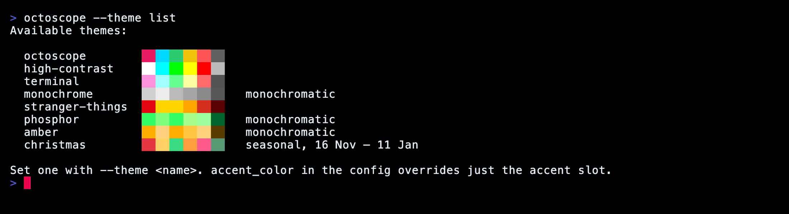

Guide
Themes
Eight built-in palettes, three of them monochromatic and one seasonal. Pick one and octoscope repaints instantly — no restart.
Set a theme on the command line, in the config file, or cycle through them live in the settings panel:
$ octoscope --theme phosphor # 80s green CRT
Preview them without guessing
--theme list prints every palette with a colour swatch and exits — so you can pick one in the terminal you'll actually run in:

terminal is the special one: instead of fixed colours it borrows your emulator's own ANSI palette, so octoscope shifts to match your iTerm / Ghostty / Alacritty theme automatically.
The octopus that keeps you company on the launch screen follows the theme too, and so does the smaller one that stays beside the dashboard's banner: body in the accent, eyes and periscope lens in the value colour, so an accent override recolours them. The monochromatic themes — and NO_COLOR, which forces one — draw them as a one-colour silhouette.
octoscope honours NO_COLOR and --no-color: both force the zero-chroma monochrome palette for that run, without touching the theme saved in your config.
The seasonal theme
From 16 November to 11 January, every year, the christmas theme stands in for the default one by itself: Santa red, candle gold and pine-green borders, a string of lights and falling snow beside the banner, a candy-cane banner frame, and the octopus in Santa's trim. The lights and the snow move on the one-second tick the footer already runs on, so nothing extra runs at rest.
It only ever replaces the default theme, and it is never saved as your theme — on 12 January the default is back, also in a session left running across the date. A theme you picked stays, and so does the default one with an accent_color of your own; --theme NAME, --theme octoscope included, keeps the season out of that run; NO_COLOR wins as always. To turn it off for good:
# ~/.config/octoscope/config.toml seasonal_theme = false
The same switch is the Seasonal theme row of the settings panel (,). And --theme christmas works on any day of the year: it is a built-in like the others.
Just the accent
Keep a theme but override its accent colour — hex or an ANSI-256 index — from the config file or the settings panel (,):
# ~/.config/octoscope/config.toml accent_color = "#00F0F0"